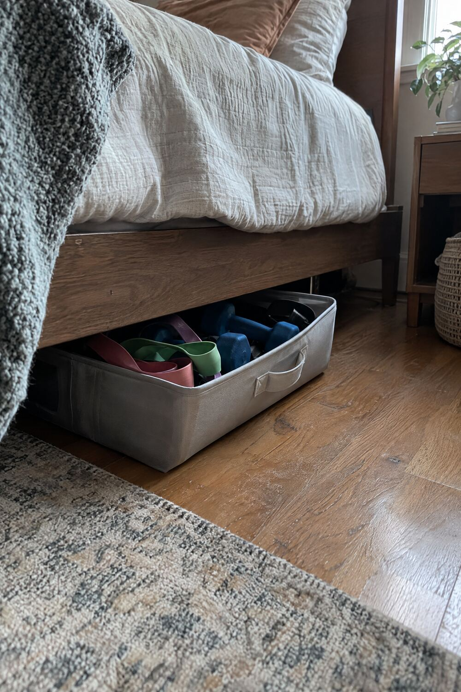
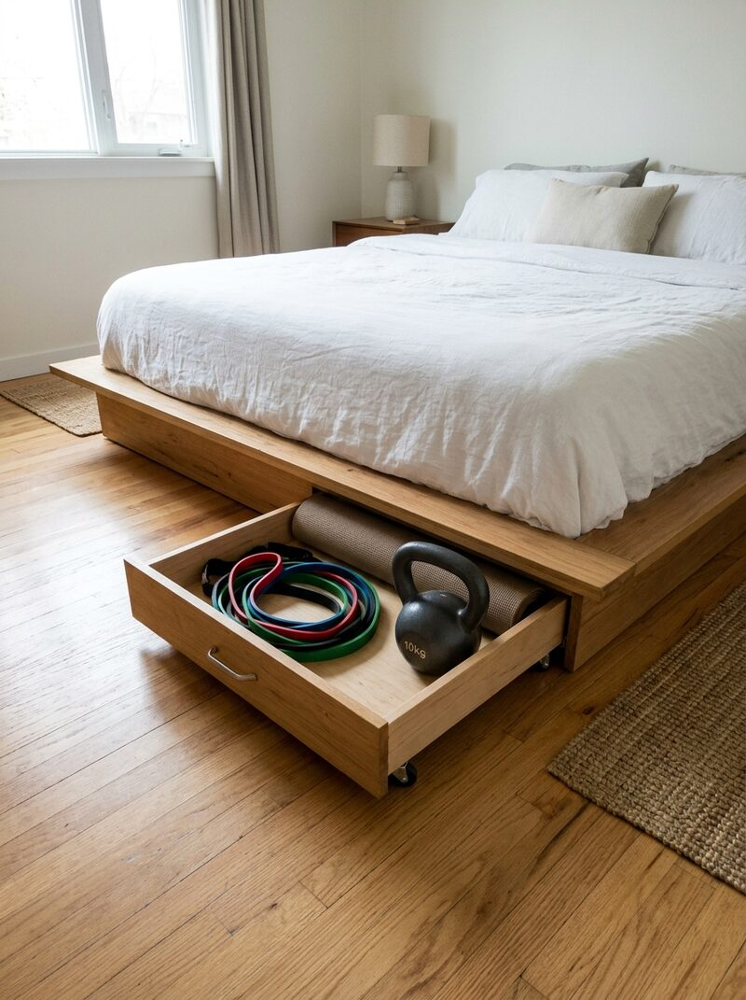
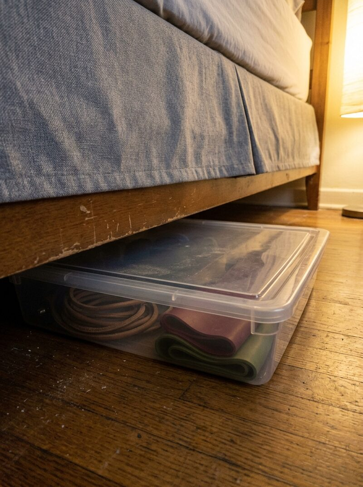
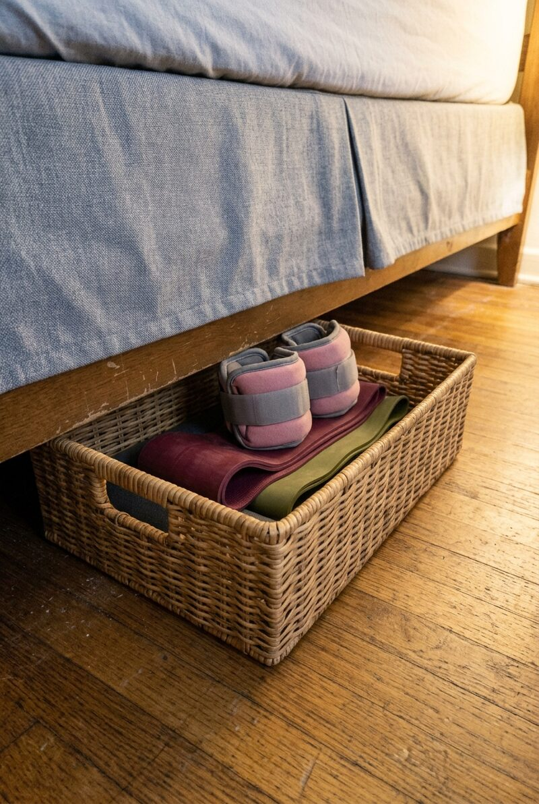
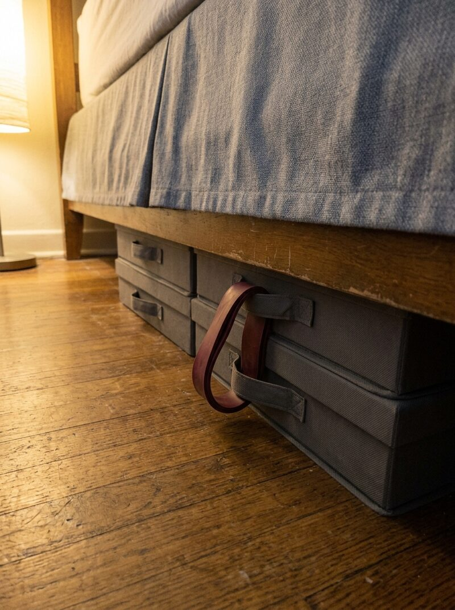
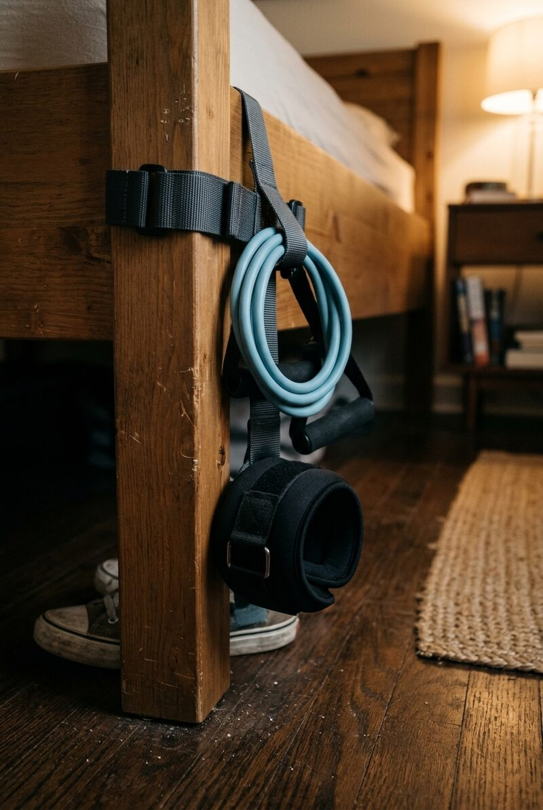
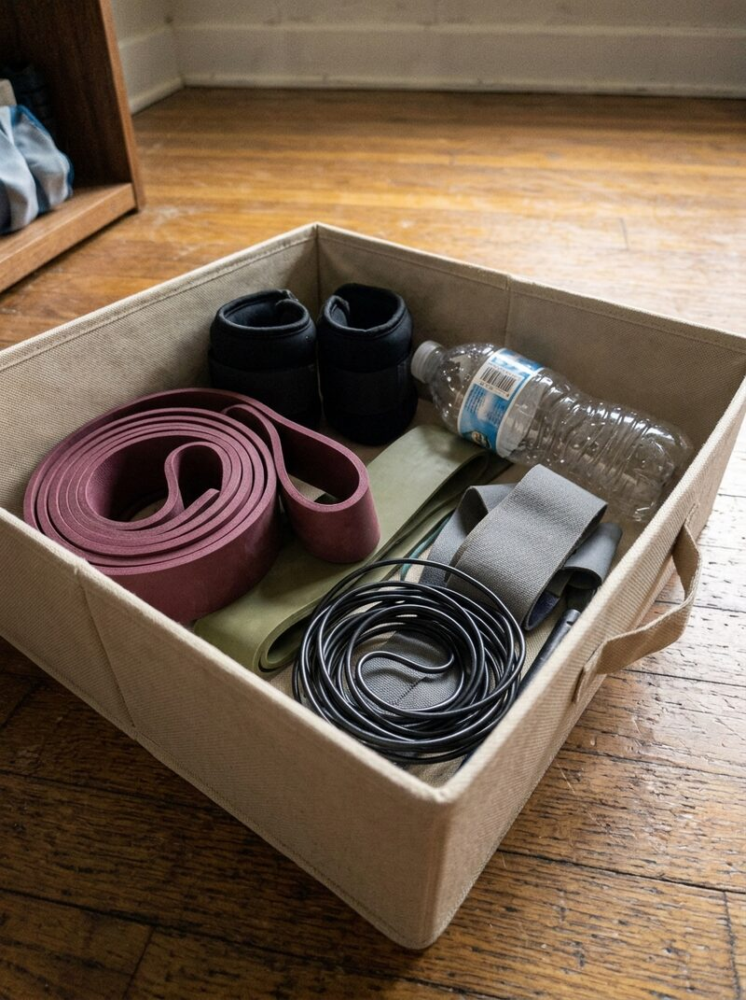
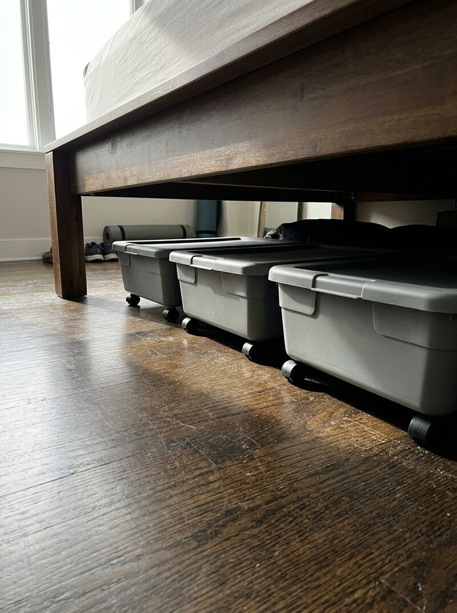
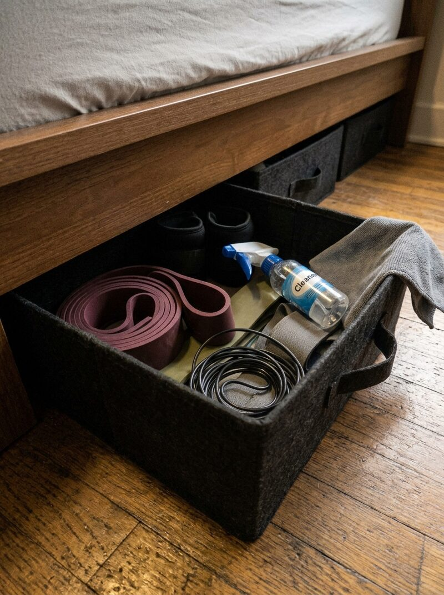
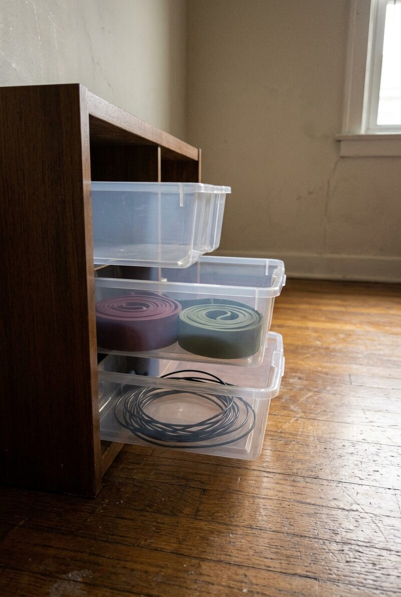

You already have the space — it's just under your bed. A flat bin slides under there and holds more than you'd expect: a few dumbbells, a stack of bands, even a small kettlebell. Once the bed skirt drops back down, it's like it was never there. No shelf, no corner claimed, nothing to explain to a roommate.

Some bed frames come with their own built-in rolling drawer — slide it open and there's room for a mat, a kettlebell, and a full band set, completely out of sight the second it's pushed shut.

A clear bin under the bed holds a jump rope and a stack of bands without needing a single inch of closet space.

A woven basket half pulled from under the bed holds ankle weights and bands — looks like decor, works like a gym closet.

Flat storage boxes slide completely under the bed frame, with a resistance band looped on the handle so it's still easy to grab.

No bin at all — just a storage strap wrapped around the bed leg, holding a band and ankle weight exactly where you'll reach for them.

Bands, ankle weights, and a water bottle — the whole kit fits in a single bin with room left over.

Three low bins lined up under the bed hold a full rotation of gear without ever spilling into the room.

A felt bin packed and ready under the bed frame — no setup required before you start, no putting away once you're done.

If under-bed clearance is tight, a slim rolling drawer unit parked beside the bed holds the same gear without needing to slide anything underneath.